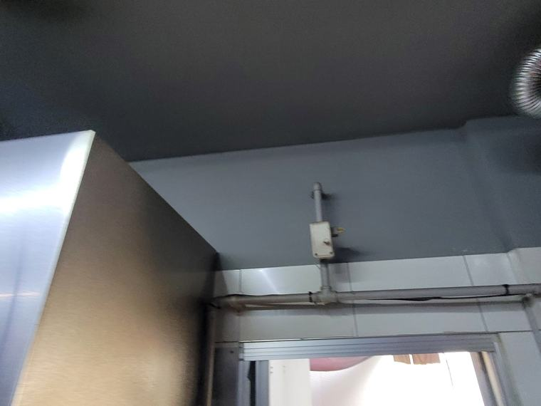
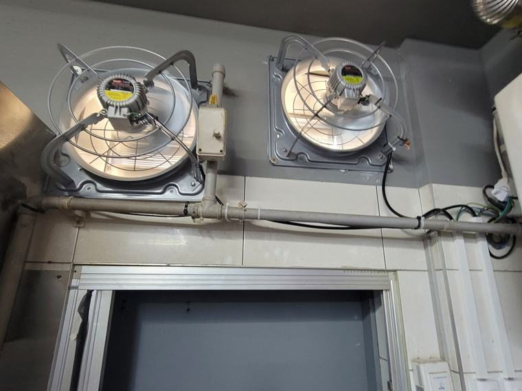

주방 고압환풍기 2대 설치
풍량 숫자만 보면 실패합니다
"큰 걸 달았는데 왜 안 빠지냐"는 문의의 상당수가 정압 문제입니다. 카탈로그의 풍량은 저항이 없는 조건에서 잰 숫자라, 덕트가 길고 꺾인 현장에서는 그대로 나오지 않습니다.
- 현장
- 상업 주방
- 시공 내용
- 고압환풍기 2대 설치
- 소요 시간
- 1일
- 중점 사항
- 정압 확보 · 덕트 저항
풍량과 정압은 다른 이야기입니다
풍량(CMH)은 한 시간에 밀어내는 공기의 양입니다. 정압은 저항을 이겨내는 힘입니다. 둘은 다른 값인데, 제품을 고를 때는 대개 풍량만 봅니다.
카탈로그에 적힌 풍량은 저항이 거의 없는 조건에서 측정한 값입니다. 환풍기 바로 앞이 바깥인 상태를 가정합니다. 그런데 실제 현장은 덕트가 몇 미터씩 이어지고 중간에 꺾이고, 끝에는 루버가 달려 있습니다. 이 모든 것이 저항입니다.
정압이 낮은 제품을 이런 현장에 달면 날개는 힘차게 도는데 배출구에 손을 대보면 바람이 거의 없습니다. 소리만 크고 일은 안 하는 상태입니다. 여기서 "더 큰 걸로 바꿔야겠다"고 판단하면 같은 문제가 반복됩니다. 크기가 아니라 등급을 바꿔야 하는 상황입니다.
시공 전 · 후
정압이 확보된 제품으로 두 지점에 나눠 설치했습니다.


이 현장의 조건
주방이 건물 안쪽에 있어 바깥까지 덕트가 길게 이어지는 구조였습니다. 중간에 두 번 꺾이고, 끝에는 방충 루버가 달려 있었습니다. 저항이 여러 겹으로 쌓이는 조건입니다.
여기에 상업 주방이라 유증기가 많습니다. 유증기는 시간이 지나며 덕트 내부에 기름층을 만들고, 그만큼 단면이 좁아져 저항이 더 커집니다. 처음에는 괜찮다가 몇 달 뒤 나빠지는 현장이 대개 이 경우입니다.
그래서 지금 필요한 정압이 아니라 여유를 둔 정압으로 골랐습니다. 초기 성능만 맞추면 반년 뒤 다시 문제가 생깁니다.
두 대로 나눈 것은 주방 구조 때문입니다. 조리 라인과 출입구 쪽에서 각각 뽑아야 구획별로 공기가 움직입니다. 회로도 나눠 한쪽에 문제가 생겨도 나머지가 돌아가게 했습니다.
이 현장의 핵심
- 정압 여유를 두고 선정 — 지금 기준이 아니라 기름층이 쌓인 뒤까지 감안해 등급을 잡았습니다.
- 덕트 경로 실측 — 길이와 꺾임 수, 끝단 루버까지 확인한 뒤 제품을 정했습니다.
- 구획별 배치 · 회로 분리 — 두 지점으로 나누고 전기 회로도 분리했습니다.
제품을 비교하실 때 볼 것
견적서에 제품명과 풍량만 적혀 있다면 정압 수치를 물어보시는 게 좋습니다. 같은 풍량이라도 정압이 낮으면 덕트가 조금만 길어져도 성능이 크게 떨어집니다.
그리고 덕트 상태를 함께 봐야 합니다. 아무리 좋은 제품을 달아도 통로가 좁아져 있으면 그만큼 못 나갑니다. 교체 시점에 덕트 청소나 경로 정리를 같이 하시면 효과가 확실히 다릅니다.
주방 위치와 덕트가 나가는 방향, 대략적인 길이와 꺾임 횟수를 알려주시면 어느 등급이 필요한지 먼저 판단해 드립니다. 덕트가 안 보이면 사진만 보내주셔도 됩니다.
자주 묻는 질문
풍량이 큰 제품을 달았는데 안 빠집니다.
정압이 부족한 경우입니다. 카탈로그 풍량은 저항이 없는 조건의 값이라, 덕트가 길고 꺾인 현장에서는 그대로 나오지 않습니다.
견적서에서 무엇을 확인하면 되나요?
제품명과 풍량뿐 아니라 정압 수치가 적혀 있는지 보시면 좋습니다. 덕트 길이와 꺾임에 견딜 수 있는 등급인지가 핵심입니다.
비슷한 현장의 다른 사례
같은 분류에서 진행한 시공입니다. 현장 조건이 비슷하면 방식도 비슷하게 잡힙니다.